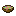
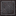

All of these are in their own Pugmeowla's Infinity Stone Core tab. The frame tells you how they show up: a task is a normal square, a goal is rounded and a challenge is spiky and plays the challenge sound.
Getting started#

Pugmeowla's Infinity Stone CoreTask
The start of infinite posibilities...
Granted the first time you join a world with the mod. It opens the tab.

Infinity Is Within ReachTask
Obtain the Infinity Gauntlet Cast
Get an
Infinity Gauntlet Cast, found in village weaponsmith chests.-
"Fine, I'll do it myself"Challenge
Create the Gauntlet
Craft the
Infinity Gauntlet. Every container and stone below comes after this one. 

It's called the Universal Weapon. Oh, really?Challenge
Obtain the Cosmi-Rod
Get the
Cosmi-Rod from a Crashed Kree Ship.-
Dance BattleChallenge
Kill a villager or player with the Cosmi-Rod
Kill a villager or another player while holding the Cosmi-Rod in your main hand.

What Was He CookingTask
A questionable recipe on a retirement planet.
Eat suspicious stew in the Garden.
The stones#
Each container has its own advancement, and its stone comes after it. The Soul Stone has no container.


The Jewel of Odin's Treasure RoomChallenge
Obtain the Tesseract
Get the
Tesseract from the Norse Village.

The Converter of Matter into Dark MatterChallenge
Obtain the Aether
Get the
Aether from the Aether Chamber.


The Sorcerers QuestChallenge
Obtain the Eye of Agamoto
Get the
Eye of Agamotto from the Sanctum Sanctorum.


The endgame#
-
Six Stones, One GauntletChallenge
Collect all 6 stones
Have all six stones in your gauntlet at once.
-
-
Fun and secret ones#
These are for doing something odd with the stones.
-
Coughing Baby vs Hydrogen BombChallenge
A rather unfair fight.
Hit a baby villager with a fully powered Power Blast: level 11 with all six stones, with the beam fully stretched out. Comes after Power.
-
Lowkey?Goal
Take a little trip to the desert with the space stone.
Arrive in a desert through the Tesseract, a Teleport GUI portal or a Jump Teleport portal. Comes after the Tesseract.

Screw Equal ExchangeGoal
Who needs alchemy when you have the Reality Stone?
Copy a netherite block with Block Saving and paste it over dirt. Comes after Reality.

Unstoppable Force vs Immovable ObjectGoal
Try dropping an infinity stone on a cactus.
Throw an Infinity Stone onto a cactus. The stone wins and the cactus breaks.

I See YouChallenge
Some things are better left unnoticed.
Hidden until you get it.
 Palladium's Watcher sometimes shows up in the Overworld sky (a 1% chance a day, for a minute). With the power of all six stones, stare at it for 10 seconds without looking away until it fades. Comes after Six Stones, One Gauntlet.
Palladium's Watcher sometimes shows up in the Overworld sky (a 1% chance a day, for a minute). With the power of all six stones, stare at it for 10 seconds without looking away until it fades. Comes after Six Stones, One Gauntlet.-
1.5 Trillion AspectsChallenge
How did you pull this off?!
Unlock the last Power Stone level (level 11, 2048 attack damage) in the skill tree. Comes after Power.